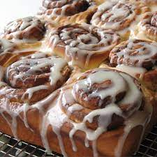

Cinnamon Roll Recipe

A pillowy, soft baked treat that is tradionally filled with cinnamon and usually topped with an icing of some sort.
Ingredients
- Flour
- Sugar
- Salt
- Yeast
- Milk
- Butter
- Baking Powder
Steps
- Add dry ingredients, including yeast, together and mix well.
- Add milk and butter, which should be melted, together.
- Mix dry and wet ingredients to form a slighty sticky dough.
- Add oil to dough and knead until smooth.
- Cover the dough and let it rest for at least an hour.
- After an hour, take out dough and roll it into a rectangle.
- Add a mixture of sugar, cinnamon and butter and apply it to the whole dough.
- Roll the dough and cut it into equal parts.
- Proof the dough for at least 20 min and preheat oven in the meantime.
- Put dough in oven and let it bake at 180 degress celcius for 25 min.
- Take out cinnamon rolls. Let it cool and serve with icing.
Go back